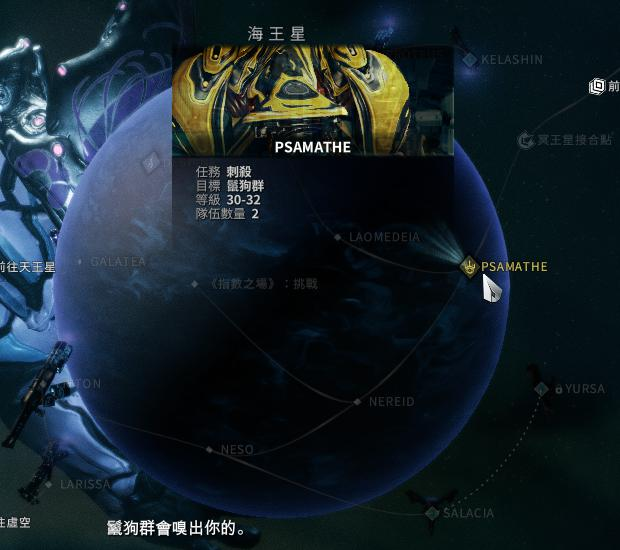
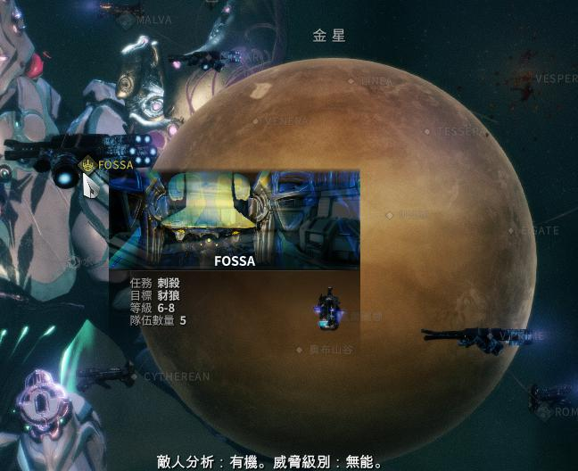
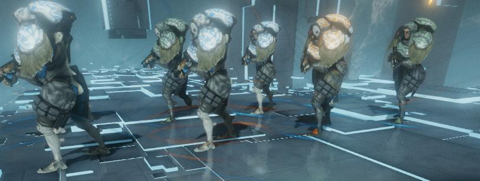
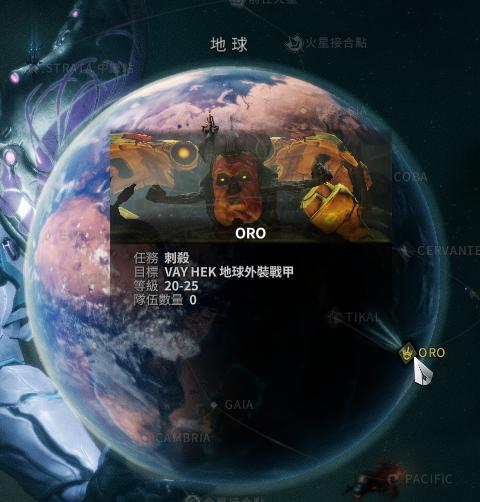

warframe這個遊戲對新手來說相當不友善加上其關卡種類眾多,所以我想多幫幫大家,使各位不再迷惘戰甲怎麼獲得以及哪種關卡最適合帶哪種戰甲,盡快的能體會這個遊戲的樂趣,我將會簡單講解大致上的資訊,如果想要戰甲更多的資訊可以點擊每個戰甲下面的連結,會有更詳細的說明.

在一般的清怪或者需要跑圖的任務中,十分頭疼在處理目標或移動時候所遇到的小怪,他擁有控制技可以致盲敵方,使得戰甲有自保的能力,再加上技能的高輸出,以及均衡的能力值,讓他在殲滅敵人的方面十分的有效率,可以使得任務進行得更圓滑
ps:由於幾次改版和更新,影片中介紹的戰甲部件獲得地方有所變更
捕獲,殲滅,生存,破壞.....等,這些需要長距離移動的破壞任務
1.一開始選擇
2.火星刺殺任務獲得


一開始玩的時候,偶爾總是遇到高血或者高護甲的怪或王,因此可以靠著他的能力,可以使得有厚重護甲或護盾的敵人變成可以比較輕鬆對付的對手,使得敵人不再那麼的難纏,尤其在遊戲前期,他的四技除了少數幾種兵,大多數的兵都可以直接解決,在加上他的被動,可以使得玩家不用冒著危險去特意撿東西又可以獲得掉落物
ps:由於幾次改版和更新,影片中介紹的戰甲部件獲得地方有所變更
刺殺,殲滅,生存
1.一開始選擇
2.火衛一刺殺任務獲得


對新手來說要守護一個目標或者長時間生存的時候,總是無法拿捏何時換彈何時該移動等時機,而他主要是防禦型的戰甲,雖然機動性偏低,但擁有較高的護甲以及護盾值,這戰甲有個特色就是技能每個不是帶著緩速要不就是凍結,對於控場十分有用,三技可以使得眾人有個可以安全攻擊敵人的立足點,使得玩家不管是在防守目標或者生存都可以有一個喘口氣以及降低被傷害的機率
ps:由於幾次改版和更新,影片中介紹的戰甲部件獲得地方有所變更
移動防禦,防禦,挖掘,攔截,生存......等,需要打長久戰的關卡
穀神星刺殺

這是隻可以隱形的角色,相信大家都知道在這遊戲中有的時候都希望有一隻可以隱形的角色可以不用一直跟敵人糾纏,在加上他比起一般戰甲還要塊的移動速度,以及他可以使得敵人繳械(無法使用槍械),使得他在技術方面的關卡十分的有利
ps:由於幾次改版和更新,影片中介紹的戰甲部件獲得地方有所變更
捕獲,破壞,清巢,救援,間諜,刺殺.....等,需要技術的任務
海王星刺殺
這隻是大家新手時最常用的戰甲,就算到後面也有很多人使用,雖然跑速遊點慢,但他的技能組合使你不管是喜歡一個人還是組隊玩都可以,他不但可以加攻擊和防禦,還可以控敵,是一隻屬於坦克型的萬用角
ps:由於幾次改版和更新,影片中介紹的戰甲部件獲得地方有所變更
幾乎所有關卡都可以也都有人使用,是目前最廣泛使用的戰甲之一,除了需要機動性以及需要隱蔽性的關卡以外,幾乎是萬用甲
金星刺殺
這是一隻可以說是打著打著就湊出一隻來的戰甲,但可別小看他,他的技能可以控敵和製造血球,這對面對突然襲來的大批敵人的你,製造出可以有緩口氣的機會,而且到了後期拿到集團卡(遊戲中的六大集團)後更可以有機率使人直接復活,讓大家可以不用暴露在拉人起來時被攻擊的風險中
ps:由於幾次改版和更新,影片中介紹的戰甲部件獲得地方有所變更
防禦,挖掘,移動防禦,生存,救援,劫持.....等,幾乎是廣泛的關卡都蠻適合使用的戰甲
任意卓越者(卓越者:就是一般怪腳底下有光環,並且都帶有特殊能力)
雖然和frost一樣都是屬於防禦角,但是由於他缺少防禦性技能所以比起frost來說她無法比較推薦的防禦類型的戰甲,但是由於他的技能大多是都帶控制並且定點,所以適合需要長時間待著的生存,他在狹小的更能發揮他的性能
ps:由於幾次改版和更新,影片中介紹的戰甲部件獲得地方有所變更
防禦,攔截,移動防禦,生存......等,長久戰
地球刺殺
